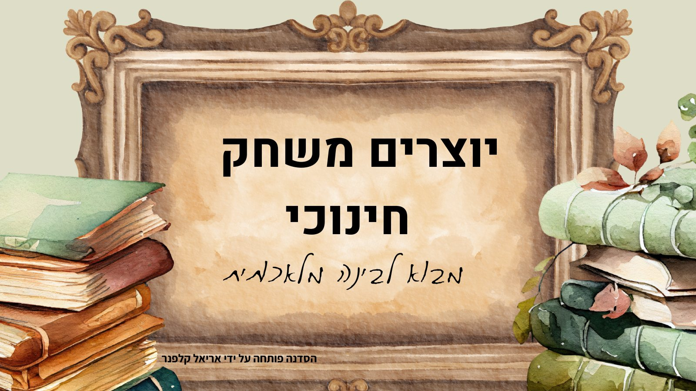
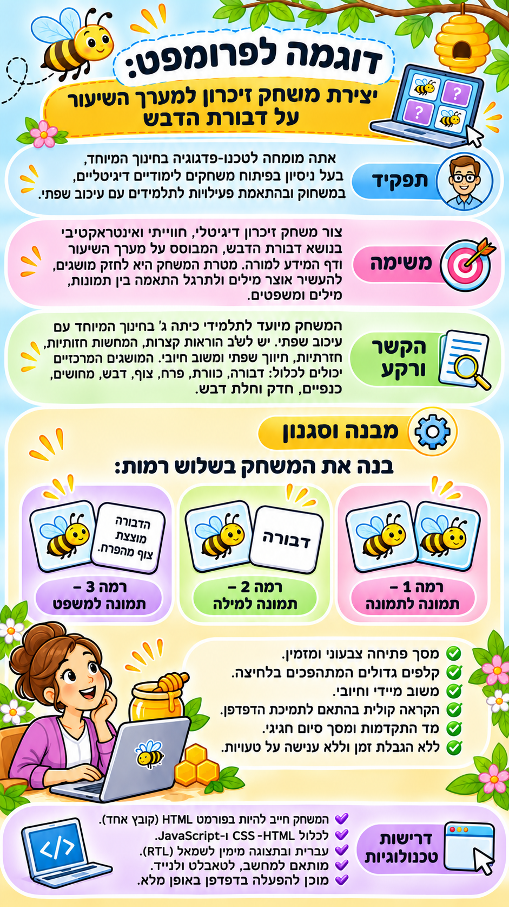

תפקיד
אתה מומחה לטכנו-פדגוגיה בחינוך המיוחד, בעל ניסיון בפיתוח משחקים לימודיים דיגיטליים, במשחוק ובהתאמת פעילויות לתלמידים עם עיכוב שפתי.
נבנה בעזרת הבינה המלאכותית משחק זיכרון על דבורת הדבש, נפרסם אותו ונשתף אותו עם התלמידים.
עוברים בין השקפים בחצים או במקשי החצים במקלדת.

הפרומפט בנוי מארבעת המרכיבים, בתוספת דרישות טכנולוגיות, ומתבסס על מערך השיעור ועל דף המידע.

אפשר להעתיק אותו, להדביק בכלי הבינה ולשנות את הנושא והכיתה לפי הצורך.
אתה מומחה לטכנו-פדגוגיה בחינוך המיוחד, בעל ניסיון בפיתוח משחקים לימודיים דיגיטליים, במשחוק ובהתאמת פעילויות לתלמידים עם עיכוב שפתי.
צור משחק זיכרון דיגיטלי, חווייתי ואינטראקטיבי בנושא דבורת הדבש, המבוסס על מערך השיעור ודף המידע למורה. מטרת המשחק היא לחזק מושגים, להעשיר אוצר מילים ולתרגל התאמה בין תמונות, מילים ומשפטים.
המשחק מיועד לתלמידי כיתה ג׳ בחינוך המיוחד עם עיכוב שפתי. יש לשלב הוראות קצרות, המחשות חזותיות, חזרתיות, תיווך שפתי ומשוב חיובי. המושגים המרכזיים יכולים לכלול: דבורה, כוורת, פרח, צוף, דבש, מחושים, כנפיים, חדק וחלת דבש.
בנה את המשחק בשלוש רמות:
כך נראה המשחק שהתקבל מהפרומפט, אחרי הפרסום ב-Google Sites. אפשר ללחוץ על הקלפים ולשחק.
אם המשחק לא נטען, אפשר לפתוח אותו בחלון חדש.
לפני ששולחים לתלמידים: משחקים בעצמכם בכל שלוש הרמות ובודקים שהתמונות, המילים והמשפטים מתאימים לתלמידים שלכם.
עכשיו תורכם: נסו לכתוב פרומפט משלכם לנושא שאתם מלמדים.